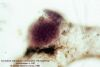
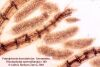
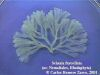

Gigartinales.html; otras_algas_rojas.html: Acrochaetiales; Compsogonales; Bonnemaissoniales; Gracillariales; Hildenbrandiales; Nemaliales; Porphyiridiales; Rhodymeniales
| Página previa: | Algas_Introduccion.htm |
|
| Contenido: | #1. Lo que debeis saber acerca de las algas rojas | |
| #2. Cómo reconocer a las algas rojas | ||
| #3. Sistemática | ||
| #4. Ecología e importancia | ||
| #5. Bibliografía especializada | ||
| Páginas subordinadas: | Bangiales.html; Ceramiales.html; Corallinales.html; Gelidiales.html Gigartinales.html; otras_algas_rojas.html: Acrochaetiales; Compsogonales; Bonnemaissoniales; Gracillariales; Hildenbrandiales; Nemaliales; Porphyiridiales; Rhodymeniales |
|
| Índice de nombres: |
indice.htm |
|
 |
|
 |
|
 |
| Tipos
morfológicos básicos: |
||
|---|---|---|
Filamentoso |
Ejes cilíndricos
muy finos. Este tipo morfológico se corresponde con los
talos de organización filamentosa, en los cuales cada rama
está formada por una fila de células, a veces
acompañadas por una o dos
capas de células que rodean a la célula central. |
|
| Filamentos haplósticos sencillos
(uniseriados o monosifonales) Cada rama es una fila de células => Véase el grupo 1 |
 |
|
| Filamentos haplósticos corticados
=> Véase el grupo 2 Las ramas están formadas por un filamento de grandes células axiales vacuolizadas rodeadas (total o parcialmente) por una capa de pequeñas células corticales asimiladoras, de forma que en la lupa se observan segmentos, cada uno de los cuales se corresponde con una célula axial. |
 |
|
| Filamentos polisifonales =>
Véase el grupo 3 Las ramas están formadas por segmentos que se forman por divisiones tangenciales de una célula axial, que queda así rodeada por un número fijo de células pericentrales que son tan largas como el segmento |
 |
|
| Talo arbuscular  |
El talo se ramifica en forma de arbolillo,
siendo las ramas principales de cierto grosor y
de organización pseudoparenquimática; los
extremos de las ramas principales y las ramitas de último orden
(las más finas) pueden ser filamentosas, pero los ejes
principales tienen más de tres capas de células en
espesor o están formados por una corteza y una médula
hueca o casi hueca. |
|
| Arborescente con ramitas filamentosas
=> Véase el grupo 4 El talo está formado por ramas
cilíndricas gruesas, de organización
pseudoparenquimática, y ramificaciones laterales muy finas,
de organización filamentosa
|
 |
|
| Arborescente sin ramitas
filamentosas El talo está formado exclusivamente
por ramas gruesas, de organización
parenquimática o pseudoparenquimática, y de grosor
más o menos uniforme. Pueden diferenciarse tres grupos:
|
||
|
 |
|
|
 |
|
|
 |
|
| Membranoso o laminar  |
El talo completo o sus partes
asimiladoras, se desarrolla principalmente en dos dimensiones,
en forma de lámina entera o dividida, maciza o hueca. Se pueden
separar dos grupos: |
|
|
 |
|
|
No hay foto disponible |
|
| Crustáceo (o incrustante) |
|
 |
| Rodofitas
del grupo 1: filamentos haplásticos
sencillos (uniseriados) |
||
|---|---|---|
| 1. |
Células sin poros de conexión
entre sí, unidas solamente por la parte externa mucilaginosa de
la pared celular. Filamento con todas las células semejantes en
tamaño y función (a excepción de la zona de
fijación al substrato) |
2 |
| 1. |
Células íntimamente unidas entre sí por un poro de conexión visible al microscopio. Filamento con diferenciación celular (las células de los ejes principales son más grandes y a menudo se orservan células reproductoras diferentes de las células vegetativas) | 3 |
| 2. |
Filamento ramificado, con
células redondeadas unidas por una matriz gelatinosa común |
Or.
Porfiridiales |
| 2. |
Filamento simple, con
células rectangulares unidas por la capa externa de la pared
celular |
|
| 3. |
Filamentos
de hasta 10 mm de longitud (normalmente menores) y de menos de 20
micras de diámetro |
Or. Acroquetiales Gen. Audouinella |
| 3. |
Filamentos
que suelen alcanzar más de 10 mm de longitud, con células
mayores |
|
| 4. |
Filamentos
sin corteza de células pequeñas, cubierto por filamentos
laterales verticilados |
Thuretella
|
| 4. |
Filamentos
total o parcialment corticados, en caso contrario con ramas alternas u
opuestas |
|
| Rodofitas
del grupo 2: filamentos haplósticos corticados |
||
|---|---|---|
| 1. |
Corticación sólo
en la base de los filamentos principales |
2 |
| 1. |
Corticación observable
en la mayor parte de los filamentos |
4 |
| 2. |
Filamentos de último orden alternos | Fam.
Ceramiáceas, or. Ceramiales |
| 2. |
Filamentos de último orden verticilados | 3 |
| 3. |
Ramitas verticiladas
bien visibles sólo en los filamentos jóvenes, en la pate
inferior se hacen concrescentes con el eje dándole un aspecto
velloso; ejes ramificados en ángulos muy abiertos |
Atractophora
hypnoides Nacariáceas, or. Nemaliales |
| 3. |
Ramitas verticiladas
bien desarrolladas y libres en casi todo el talo, dándole un
aspecto de limpiatubos; ejes principales ramificados en ángulo
más o menos cerrado |
Ceramiáceas, or Ceramiales |
| 4. |
Corticación
limitada a los nudos
(zona de unión de dos células axiales) |
or.
Ceramiales
|
| 4. |
Corticación
contínua en los filamentos completamente desarrollados |
|
| 5. |
Sin filamentos simples
haplósticos |
Or. Ceramiales |
| 5. |
Con filamentos simples haplósticos (sin células corticales) dispuestos formando verticilos. | 6 |
| 6. |
Corteza compacta de aspecto
parenquimático |
Spyridia Ceramiáceas, or. Ceramiales |
| 6. |
Corteza laxa, formada por filamentos laterales concrescentes | Thuretella
schousboei
Gloeosifoniáceas, |
| Rodofitas
del grupo 3: filamentos polisifonales |
||
|---|---|---|
| 1. |
Talo postrado |
|
| 1. |
Talo erecto |
2 |
| 2. |
Filamentos
con tres
células pericentrales |
Asparagopsis
armata (fase "Falkenbergia") Bonnemaisoniáceas, |
| 2. |
Filamentos con 4 o más
células pericentrales |
Or. Ceramiales |
| Rodofitas
del grupo 4: talos pseudoparenquimáticos con ramitas
filamentosas |
||
|---|---|---|
| 1. |
Talo con dos tipos de ramas,
las normales muy ramificadas y otras simples en forma de arpón y
provistas de aguijones |
Bonnemaisoniáceas, or. Bonnemaisoniales
|
| 1. |
Talo sin ramas en forma de
arpón |
2 |
| 2. |
Ejes principales más
o menos segmentados cuando se observan bajo la lupa |
Véase el or.
Ceramiales |
| 2. |
Ejes principales no segmentados |
Bonnemaisonia
asparagoides Bonnemaisoniáceas, or. Bonnemaisoniales
|
| Rodofitas
del grupo 5: talos pseudoparenquimáticos con ramas huecas o
casi |
||
|---|---|---|
| 1. |
Talo formado por ejes
cilíndricos y ramas huecas |
|
| 1. |
Todas las partes del
talo
semejantes, más o menos huecas |
2 |
| 2 |
Talo segmentado (articulado), formado por segmentos sucesivos, separados entre sí por constricciones o tabiques transversales; ramificación dicotómica, verticilada, lateral o irregular | Or. Rhodymeniales |
| 2. |
Talo no articulado, sin
constricciones marcadas o con estrechamientos sólo en los puntos
de ramificación; ramificación dicotómica regular o
subdicotómica |
3 |
| 3. |
Talo dicotómico
regular; células corticales grandes y hialinas |
Quetangiáceas, or. Nemaliales
|
| 3. |
Talo con ramificación algo irregular; células corticales pequeñas | Chrysimenia ventricosa,
Rodimeniáceas, or.
Rhodymeniales |
| Rodofitas
del grupo 6: talos pseudoparenquimáticos con ramas macizas
cilíndricas |
||
|---|---|---|
| 1. |
Talo segmentado, es decir,
formado por artejos sucesivos, de manera que se observan nudos y
entrenudos como en las cañas |
2 |
| 1. |
Talo no segmentado, de forma
que a lo largo de los ejes no se observan nudos y entrenudos bien
diferenciados |
4 |
| 2. |
Talo impregnado de carbonato
cálcico |
Véase or.
Corallinales |
| 2. |
Talo no calcificado |
3 |
| 3. |
Segmentos separados por
estrechamientos |
Catenella caespitosa
Caulacantáceas, or. Gigartinales
|
| 3. |
Segmentos separados por
tabiques internos |
Véase Rodomeláceas, or. Ceramiales |
| 4. |
Alga cespitosa, formando
almohadillas que rara vez superan los 3 cm de altura, y en las que no
se pueden diferenciar claramente los talos individuales |
5 |
| 4. |
Alga no cespitosa, en la que
los talos individuales pueden aislarse independientemente de la
densidad de la población, superando con frecuencia los 3 cm de
altura |
7 |
| 5. |
Talo con ejes rastreros
fijados mediante rizoides |
Véase or.
Gelidiales |
| 5. |
Talo sin ejes rastreros |
6 |
| 6. |
Ramitas en forma de maza. Talo
con iridiscencia azulada cuando se observa bajo el agua y muy oscuro
cuando se seca |
Chondria caerulescens
Rodomeláceas,
or.
Ceramiales
|
| 6. |
Ramitas terminadas en punta.
Talo no iridiscente |
Véase or. Gigartinales (Caulacanthus, Gigartina, Hypnea) |
| 7. |
Talo con ramificación
principalmente de tipo dicotómico, a veces con
ramificación
irregular o lateral, pero formado por ejes más o menos del mismo
grosor |
8 |
| 7. |
Talo con ramificación
principalmente de tipo lateral, formado por ejes más o menos
diferentes
en grosor |
13 |
| 8. |
Talo ramificado sólo en
la base |
Nemalion helminthoides
Nemaliáceas, or. Nemaliales
|
| 8. |
Talo ramificado en casi toda
su longitud |
9 |
| 9. |
Talo de organización
uniaxial, con segmentos observables bajo la lupa |
Ceramium spp.
Ceramiáceas, or.
Ceramiales
|
| 9. |
Talo de organización
multiaxial, no segmentado |
10 |
| 10. |
Ramificación irregular
o lateral |
Helminthocladia spp.
Helmintocladiáceas,
|
| 10. |
Ramificación
dicotómica regular |
11 |
| 11. |
Talo impregnado de carbonato
cálcico, de color blanco o verde pálido |
Liagora spp. Helmintocladiáceas,
|
| 11. |
Talo no calcificado, de color
rojizo o porpúreo |
12 |
| 12. |
Talo rígido y cartilaginoso, con los
ápices comprimidos |
Gymnogongrus griffithsiae
Filoforáceas, or. Gigartinales
|
| 12. |
Talo blando y viscoso, con todas las ramas
igualmente comprimidas debido a que son casi huecas |
Quetangiáceas, or. Nemaliales
|
| 13. |
Ramas con el ápice
redondeado o truncado |
14 |
| 13. |
Ramas con el ápice en
punta |
15 |
| 14. |
Talo de organización uniaxial (aunque con
ápices obtusos o truncados), con corteza compacta |
Laurencia spp.
Rodomeláceas, or.
Ceramiales
|
| 14. |
Talo de organización multiaxial, con
corteza viscosa |
Helminthocladia spp.
Helmintocladiáceas,
|
| 15. |
Ramas no curvadas en el extremo |
16 |
| 15. |
Algunas ramas o ejes
principales del talo curvadas en el extremo |
17 |
| 16. |
Ramificación lateral regular. Ejes
principales de menos de 3 mm de diámetro. Ramitas fusiformes |
Chondria tenuissima
Rodomeláceas, or.
Ceramiales
|
| 16. |
Ramificación lateral irregular. Ejes
principales de 3 mm de diámetro o más. Ramitas no
fusiformes |
Gracillaria verrucosa
Gracilariáceas, or. Gigartinales
|
| 17. |
Talo flexible, de color claro
en la desecación |
Hipneáceas, or. Gigartinales
|
| 17. |
Talo rígido, de color
oscuro en la desecación |
Véase Rodomeláceas, or. Ceramiales (Halopithys, Bostrychia) |
| 1. |
Talo articulado e
impregnado
de carbonato cálcico |
Coralináceas, or. Coralinales
|
| 1. |
Talo no articulado ni
calcificado |
2 |
| 2. |
Ejes principales del
talo
rastreros, fijados al substrato mediante rizoides |
3 |
| 2. |
Ejes principales erectos |
4 |
| 3. |
Talo
con constricciones que separan segmentos
cilíndricos o aplanados |
Catenella caespitosa
Caulacantáceas, or. Gigartinales
|
| 3. |
Talo
sin constricciones |
Véase or. Gelidiales
|
| 4. |
Talo con
ramificación
dicotómica |
|
| 4. |
Talo con
ramificación
lateral |
6 |
| 6. |
Últimas ramificaciones
muy cortas y truncadas. Célula apical situada en una
pequeña depresión del extremo de las ramas |
Laurencia spp.
Rodomeláceas,
or.
Ceramiales
|
| 6. |
Últimas ramificaciones
no siendo a la vez muy cortas y truncadas |
7 |
| 7. |
Últimas y
penúltimas ramificaciones del talo pectinadas, formando a modo
de peines de 2-4 puntas |
Plocamium spp. Plocamiáceas, or. Gigartinales |
| 7. |
Talo sin ramificaciones
pectinadas |
8 |
| 8. |
Ramas principales del talo con
un nervio medio más o menos visible |
Esferococáceas, or. Gigartinales |
| 8. |
Sin nervio medio |
9 |
| 9. |
Ramitas curvadas en forma de
gancho |
Rytiphloea tinctoria
Rodomeláceas, or.
Ceramiales
|
| 9. |
Sin ramitas curvadas en forma
de gancho |
10 |
| 10. |
Ramas con el extremo redondeado |
Véase or. Gelidiales |
| 10. |
Ramas terminadas en punta |
11 |
| 11. |
Talo elástico.
Sección transversal mostrando una médula con
células en forma de estrella embebidas en una matriz gelatinosa |
Gigartina spp.
Gigartináceas, or. Gigartinales
|
| 11. |
Talo no elástico.
Sección transversal mostrando una médula compacta de
células redondeadas |
Véase or. Gelidiales |
| Rodofitas
del grupo 8: talos membranosos o laminares sin nervio medio |
||
|---|---|---|
| 1. |
Talo
submicroscópico, en forma de disco epífito |
Shalingia, Eritropeltidáceas,
|
| 1. |
Talo
macroscópico, erecto o postrado |
2 |
| 2. |
Talo grueso, de consistencia
cartilaginosa o viscosa |
3 |
| 2. |
Talo delgado, de consistencia
membranosa |
8 |
| 3. |
Talo postrado, creciendo
más o menos paralelo al substrato o formando cornisas |
Véase el grupo 10 |
| 3. |
Talo erecto, creciendo
más o menos perpendicularmente al substrato |
4 |
| 4. |
Talo blando y viscoso, con
ramificación pinnada |
|
| 4. |
Talo blando o cartilaginoso, con ramificación principalmente dicotómica | 5 |
| 5. |
Lóbulos
más anchos hacia el ápice |
6 |
| 5. |
Lóbulos
más estrechos hacia el ápice |
7 |
| 6. |
Talo
laminar sólo en el extremo, la parte inferior formada por ejes
aplanados dicotómicos |
Mastocarpus stellatus
Gigartináceas, or. Gigartinales
|
| 6. |
Talo
formado por láminas subdicotómicas que nacen de un estipe
corto |
Rhodymenia pseudopalmata Rodimeniáceas, |
| 7. |
Talo
blando y mucilaginoso, con médula filamentosa |
|
| 7. |
Talo
cartilaginoso, con médula compacta |
Gracilariáceas, or.
Gracillariales
|
| 8. |
Talo enrollado
helicoidalmente
y con los bordes dentados |
Vidalia volubilis
Rodomeláceas, or.
Ceramiales
|
| 8. |
Talo no enrollado ni con
los
bordes dentados |
9 |
| 9. |
Talo dividido en
lóbulos más o menos agudos |
|
| 9. |
Talo entero o con
lóbulos redondeados |
10 |
| 10. |
Talo formado por una sola capa
de células |
Porphyra
umbilicalis Bangiáceas, or. Bangiales |
| 10. |
Talo formado por dos o
más capas de células |
Or. Ceramiales |
| Rodofitas
del grupo 9: talos membranosos o laminares con nervio medio o
estipe alargado |
||
|---|---|---|
| 1. |
Láminas
más o
menos enteras, con ramificaciones o proliferaciones que nacen del
nervio
medio. Nervio medio recorriendo toda la longitud de las láminas |
Delesseriáceas Or. Ceramiales |
| 1. |
Láminas
más o
menos divididas por el margen. Con estipe o con nervio medio en la base
de
las
láminas |
2 |
| 2. |
Partes laminares del talo
claramente más largas que anchas, dispuestas sobre estipes
cilíndricos alargados |
Or. Gigartinales |
| 2. |
Partes laminares del talo
más o menos redondeadas o casi tan largas como anchas, sin
estipe o con estipe corto |
3 |
| 3. |
Nervio medio grueso, ocupando
la mitad innferior de las láminas y prolongado en la base de
éstas a modo de estipe. Talo discontinuo, formado por
láminas redondeadas |
Halimeniáceas,
|
| 3. |
Nervio medio poco
desarrollado, visible sólo en la base. Láminas del talo
sin estipe. Talo muy ramificado de forma irregular |
Or. Ceramiales |
| Rodofitas
del grupo 10: talos incrustantes |
||
|---|---|---|
| 1. |
Talo de aspecto pétreo,
impregnado de carbonato cálcico |
Véase el or.
Coralinales |
| 1. |
Talo de aspecto carnoso o
membranoso, no impregnado de carbonato cálcico |
2 |
| 2. |
Talo grueso, que puede
desprenderse del substrato sin perder su integridad |
Peyssonnellia
spp. Peyssonnelliáceas, or. Gigartinales |
| 2. |
Talo muy delgado,
íntimamente unido al substrato, de forma que hay que rasparlo
para desprenderlo |
Hildenbrandia rubra
Hildenbrandiáceas, or. Hildenbrandiales
|
Es muy engorrosa y poco intuitiva para quien no sea un especialista, ya que se basa en caracteres microscópicos del desarrollo del aparato reproductor femenino y en otros caracteres citológicos. Por tanto es poco útil tratarla aquí en profundidad, mencionaremos todos los órdenes representados en nuestro territorio aunque la mayoría de las veces no se pueden reconocer de visu; es necesario en primer lugar identificar el género para saber con seguridad a qué orden pertenece un alga roja
| Enlaces a otros sitios con fotos de algas rojas: |
| Abysso.- http://www.sportesport.it/red_algae.htm |